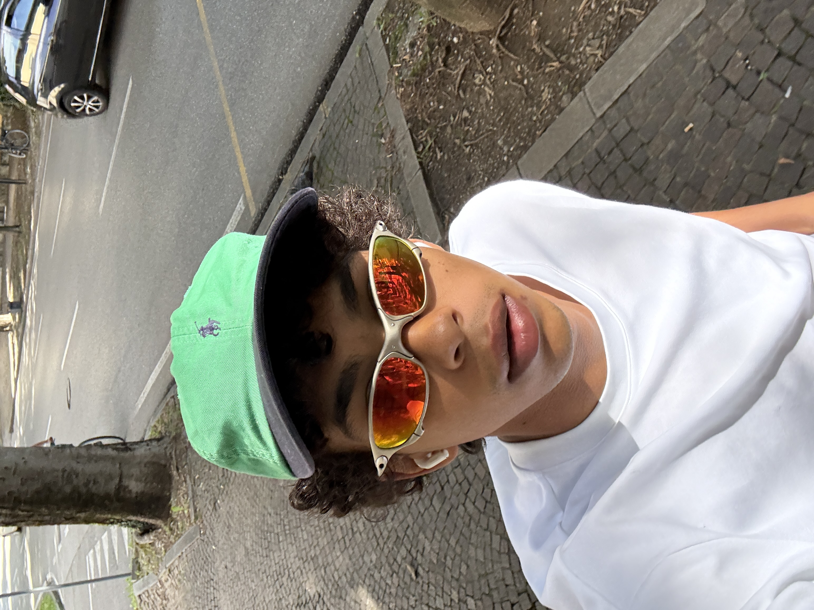
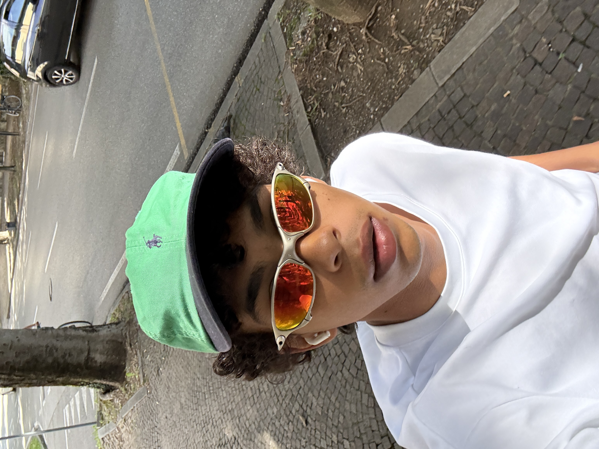

I was born in 2003 in Udine, Italy.
tech founder in training - hospitality - developer in progress
Currently at 42 Firenze (algorithms, low-level thinking, programming). Background in fine dining and fashion (runway, shooting).
timoteocostantiniscala@gmail.com
github
instagram
linkedin
models.com
Cheers,
Timoteo
Projects:
chefdotcom
A digital stage for chefs to showcase their work, connect with food enthusiasts, and share culinary stories. Building a platform at the intersection of hospitality and technology.
42 Firenze
Deep dive into algorithms, low-level programming, and computer science fundamentals. Learning to think like a machine while solving complex problems.
productivity workflows with AI
Exploring how AI can be integrated into daily workflows. Experimenting with automation, code assistance, and creative problem-solving tools.
digital scriptures
Personal knowledge base and notes system. Capturing thoughts, learnings, and ideas as I navigate tech, hospitality, and life.
Passions:
travel & exploration
Constantly moving, discovering new places, cultures, and perspectives. Feeding curiosity and staying engaged.
 
